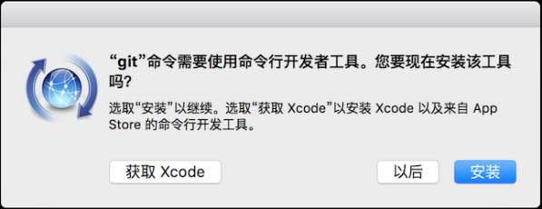

最早 Git 是在 Linux 上开发的，很长一段时间内，Git 也只能在 Linux 和 Unix 系统上跑。不过，慢慢地有人把它移植到了 Windows 上。现在，Git 可以在 Linux、Unix、Mac 和 Windows 这几大平台上正常运行了。
要使用 Git，第一步当然是安装 Git 了。根据你当前使用的平台来阅读下面的文字：
首先，你可以试着输入
git
，看看系统有没有安装 Git：
$ git
The program 'git' is currently not installed. You can install it by typing:
sudo apt-get install git
像上面的命令，有很多 Linux 会友好地告诉你 Git 没有安装，还会告诉你如何安装 Git。
如果你碰巧用 Debian 或 Ubuntu Linux，通过一条
sudo apt-get install git
就可以直接完成 Git 的安装，非常简单。
老一点的 Debian 或 Ubuntu Linux，要把命令改为
sudo apt-get install git-core
，因为以前有个软件也叫 GIT（GNU Interactive Tools），结果 Git 就只能叫
git-core
了。由于 Git 名气实在太大，后来就把 GNU Interactive Tools 改成
gnuit
，
git-core
正式改为
git
。
如果是其他 Linux 版本，可以直接通过源码安装。先从 Git 官网下载源码，然后解压，依次输入：
./config
，
make
，
sudo make install
这几个命令安装就好了。
如果你正在使用 Mac 做开发，有两种安装 Git 的方法。
一是安装 homebrew，然后通过 homebrew 安装 Git，具体方法请参考 homebrew 的文档： http://brew.sh/ 。
第二种方法更简单，也是推荐的方法，就是在终端上输入
git --version
，如果已经安装了 Git 会显示类似
git version 2.4.9 (Apple Git-60)
的 Git 版本提示信息。如果没有安装，会弹出提示框提示安装 “Command Line Tools”，点 “Install” 就可以完成安装了。

实话实说，Windows 是最烂的开发平台，如果不是开发 Windows 游戏或者在 IE 里调试页面，一般不推荐用 Windows。不过，既然已经上了微软的贼船，也是有办法安装 Git 的。
Windows 下要使用很多 Linux/Unix 的工具时，需要 Cygwin 这样的模拟环境，Git 也一样。Cygwin 的安装和配置都比较复杂，就不建议你折腾了。不过，有高人已经把模拟环境和 Git 都打包好了，名叫 msysgit，只需要下载一个单独的 exe 安装程序，其他什么也不用装，绝对好用。
msysgit 是 Windows 版的 Git，从 http://msysgit.github.io/ 下载，然后按默认选项安装即可。
安装完成后，在开始菜单里找到 “Git” -> “Git Bash”，蹦出一个类似命令行窗口的东西，就说明 Git 安装成功！
安装完成后，还需要最后一步设置，在命令行输入：
$ git config --global user.name "Your Name"
$ git config --global user.email "email@example.com"
因为 Git 是分布式版本控制系统，所以，每个机器都必须自报家门：你的名字和 Email 地址。你也许会担心，如果有人故意冒充别人怎么办？这个不必担心，首先我们相信大家都是善良无知的群众，其次，真的有冒充的也是有办法可查的。
注意
git config
命令的
--global
参数，用了这个参数，表示你这台机器上所有的 Git 仓库都会使用这个配置，当然也可以对某个仓库指定不同的用户名和 Email 地址。